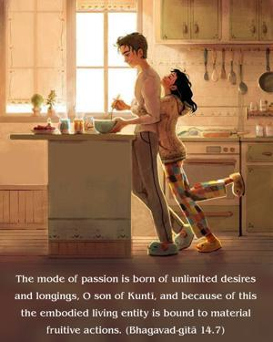
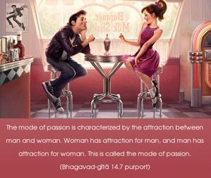
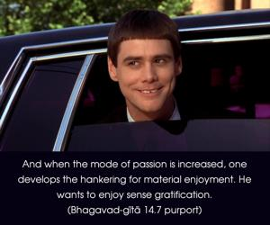
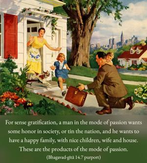
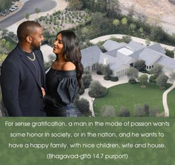
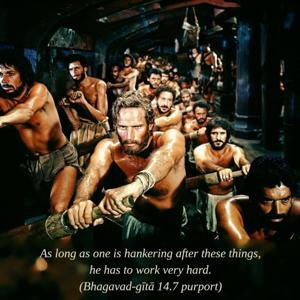
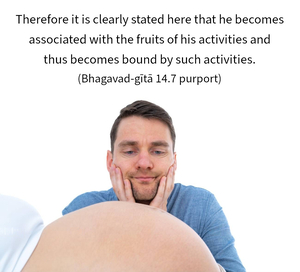
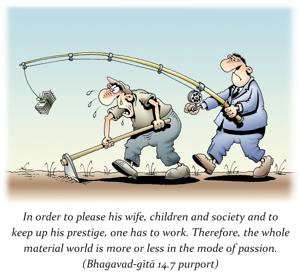
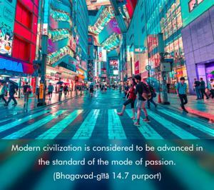

The mode of passion is born of unlimited desires and longings, O son of Kuntī, and because of this the embodied living entity is bound to material fruitive actions.









The mode of passion is characterized by the attraction between man and woman. Woman has attraction for man, and man has attraction for woman. This is called the mode of passion. And when the mode of passion is increased, one develops the hankering for material enjoyment. He wants to enjoy sense gratification. For sense gratification, a man in the mode of passion wants some honor in society, or in the nation, and he wants to have a happy family, with nice children, wife and house. These are the products of the mode of passion. As long as one is hankering after these things, he has to work very hard. Therefore it is clearly stated here that he becomes associated with the fruits of his activities and thus becomes bound by such activities. In order to please his wife, children and society and to keep up his prestige, one has to work. Therefore, the whole material world is more or less in the mode of passion. Modern civilization is considered to be advanced in the standard of the mode of passion. Formerly, the advanced condition was considered to be in the mode of goodness. If there is no liberation for those in the mode of goodness, what to speak of those who are entangled in the mode of passion?